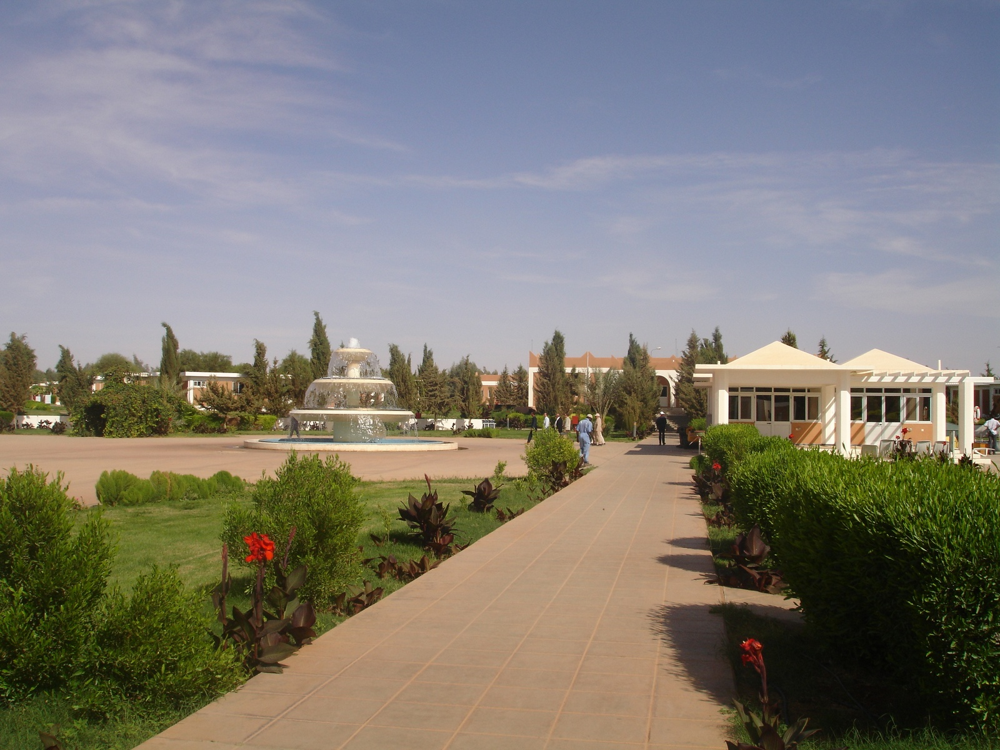
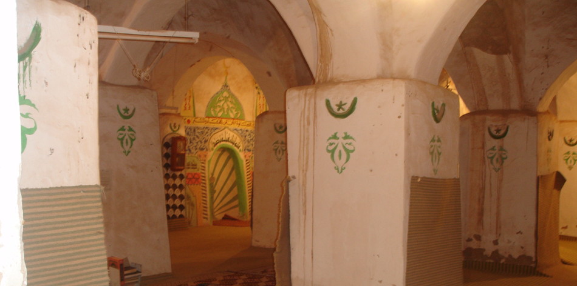
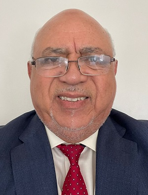
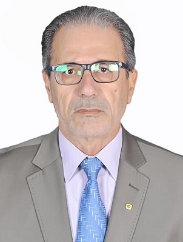

Our Company's Core
We value responsibility, trust and integrity. Our unwavering dedication to quality will drive us towards our goals.
- Providing geology, and petroleum engineering solutions for the oil and gas industry.
- Delivering quality consultancy services for reservoirs across the exploration and production life cycle.
- Hosting events that give oil companies the chance to collaborate and network.
About Us
Our team is as diverse as it is innovative, with unique expertise in technical evaluations of oil and gas business opportunities.
Our company offers expert knowledge and technology to oil and gas companies from the exploration to development phases in geology and geophysics, petroleum engineering and petroleum economics.

The Founders

GIBANI A. GIBANI
CHAIRMAN OF ENERGY FRAME
Mr. Gibani graduated with a geoscience degree and has been focusing on energy & business related jobs since 1977. Mr. Gibani as a distinguished business man with successful experiences, collaborations with organizations and participation in summits involved with environmental and energy-based work makes him a valuable leader. He was appointed the chairman of Energy Frame Company in 2021.
After being contracted in Libya for 7 years in construction and building management, the lack of safety and concern for his family prompted his interest in developing a career in Facilities Management. Motivational and empowering professional with multi-faceted career in restaurant management, project management, construction management, and facilities management. Well skilled, knowledgeable with excellent multi-tasking skills and the ability to thrive in regulatory, high-pressure situations. Offer strong communication and interpersonal skills with the ability to quickly form internal and external key relationships. Wide-ranging experience in overseeing facilities inspections, maintenance, alterations, improvements, and repair projects, and with other managerial facilities, construction-related functions. A proven record of success in managing sophisticated facilities, properties and assets and keeping up with high standards of maintenance and customer service.
Mr. Gibani was a consultant for the Environmental Project: Great Man Made River Benghazi, Libya 2009, he solved the problems of evaporation, pollution bird migration, desert sand pollution, fish poll in the largest water reservoir in Libya. He was a SENIOR CONSULTANT for the Geology Project: Victoria Group for Petroleum Geology Tripoli, Libya by solving the issues related to drilling fluids leakage.
Mr. Gibani was a General Contractor at Rancho Cucamonga, CA Global Construction Co. and Executive Manager for Los Angeles, CA Trade and Contractors Corp. Executed international contacts with Libya, China, Egypt and Morocco.
He also managed all facility related projects for Project Manager Walnut, CA Sassi Construction Co.
Partner and Accounts Manager Vancouver, WA, Supervised the maintenance of over than 900 Apartment units in Portland Oregon at A & J Good Hands Inc.
Mr. Giabni is the Lead Caterer and Founder of Al-Jibani Halal Market and he has catered for Conferences, Weddings, Youth Camps, Correction Centers, and Worship Centers.

FATEH A. BELHAJ
DIRECTOR OF ENERGY FRAME
Mr. Belhaj has worked with technical teams starting from 1988 in Libya, Tunisia, Algeria, & Angola along with geologists, geophysicists, reservoir engineers, & drilling engineers integrating age dating, electric logs, core, rock samples, geochemical analysis and seismic interpretations studying facies distribution for the purpose of identifying leads and drillable prospects locations, reservoir modeling and reserves calculations using land mark, kingdom and lately Petrel workstation, which lead to the discovery of 18 oil/gas fields in Libya and Algeria with total OOIP of more than 2 Billion barrels equivalent.
Mr. Belhaj has trained on job geologists and explorationsit through his working career in different oil company's projects and through his teaching of junior graduates majoring in geology, reservoir engineering and through teaching Petroleum Systems, Geomorphology, Stratigraphy and Geology of Libya. Participated in many prestigious international petroleum conferences with technical papers focused on Palaeozoic/Mesozoic classtics and carbonate strata of North Africa.
He gained excellent experience regarding management skills through his past full time jobs as Deputy Chairman and Chairman of TPOC and as Vice President and President of two private companies (Almajal & Rawan oil service consulting companies).
Mr. Belhaj worked at Sirte Oil Company as a Geologist Specialistwith the following duties: Operation, Wellsit Geologist, Special studies, Regional Projects, outcrop fieldwork & Conc. Studies, also writing and presenting reports on final and ongoing projects. He has worked at NOC as a Senior Reservoir Geologist with the following duties: Member of Technical Team (NOC)-Algerian Technical Team, Working on Reservoir Communication of Al-Rar Gas field (Algeria) & Al Wafa Gas field (Libya).
Mr. Belhaj Joined the NOC technical/evaluation and negotiation teams participated in the evaluation of 137 exploration open area onshore and offshore in all the Libyan sedimentary basins and has also worked with Medex North Africa-Alger office, Paris office and Tunis office.
Mr. Belhaj is the Ex-Vice Chairman of Turkish Petroleum (TPOC) Tripoli-Libya with the following duties: Acting chairman of the company as per the schedule of the chairman 30/20 days. Responsible for exploration and HSE programs and following operation very closely. Responsible for the contacts and meeting with the NATIONAL OIL COORPORATION executing the contracts and assessing the progress and extensions if needed.